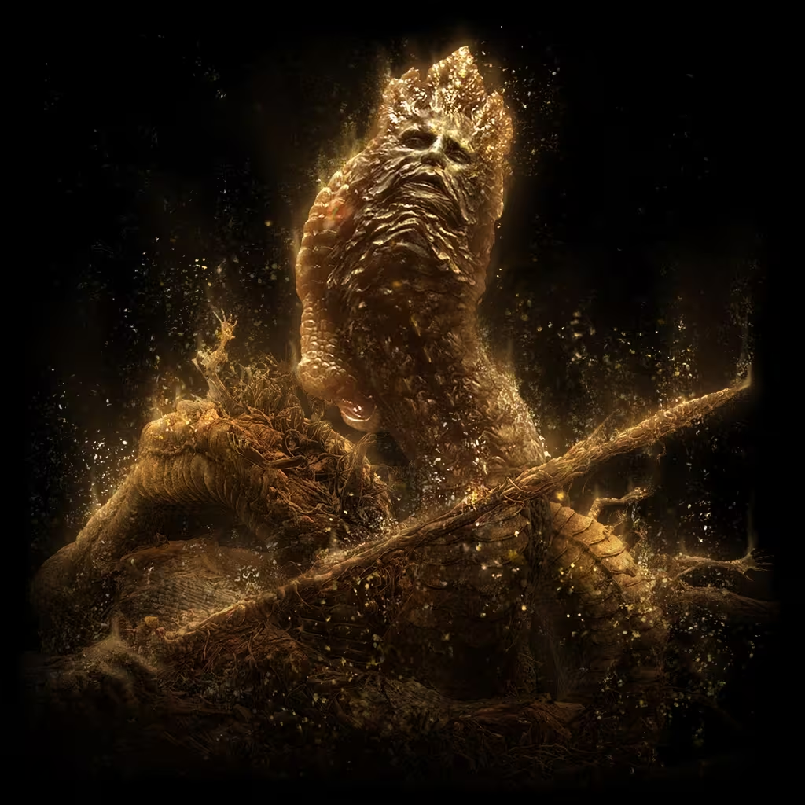

格密尔火山是作为交界地监狱而存在的，并负责对有罪之人的审批。拉卡德司法官是格密尔火山官邸的主人，是个毫无怜悯心的法官，也是众多拷问官的长官。他是个如蛇一般，令人感冒的男人。
拉卡德是蕾娜菈与拉达冈的其中一位子嗣。在拉达冈成为玛莉卡女王的王夫之后，那群孩子成为外戚，也成为半神。
为了永远地生存、吞噬，不停地成长，拉卡德成为了大蛇：“我很明了，亵渎之路有多么险峻──害怕犯下罪孽，哪能走这条路？”
碎片君王”拉卡德的大卢恩透过恩惠的效力，打倒敌人时能恢复血量。
拉卡德是蕾娜菈与拉达冈的其中一位子嗣。然而拉卡德却让亵渎之蛇一口吞噬-包含自己本身，以及伟大的大卢恩

受黄金树雕琢的“巫兆王”蒙莴特的追忆
透过解指的帮助，能获得追忆之主的力量。如果直接使用，能获得巨量卢恩。
为了永远地生存、春，不停地成长，拉卡德成为了大蛇:我很明了，亵渎之路有多么险峻-害怕犯下罪孽，哪能走这条路?
可以找圆桌老太婆来换拉卡徳的力量，或者直接使用，直接使用将获得40000卢恩。
亵渎圣剑： 亵渎圣剑 拉卡徳的冤魂： 拉卡徳的冤魂
游戏战斗实机